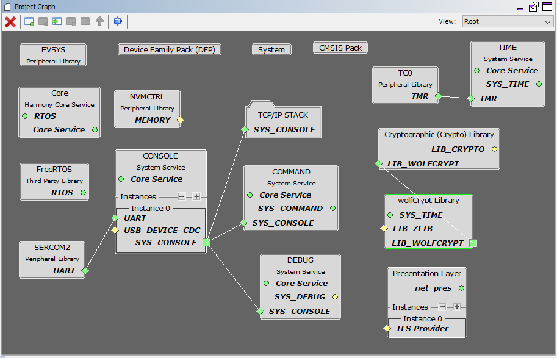
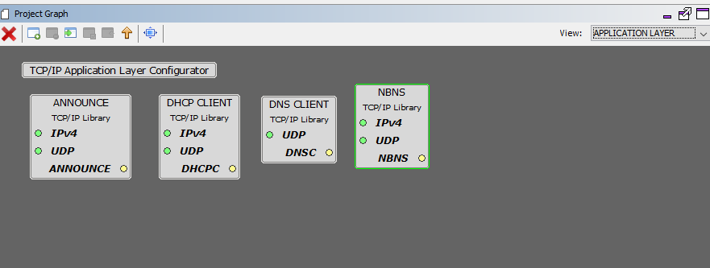
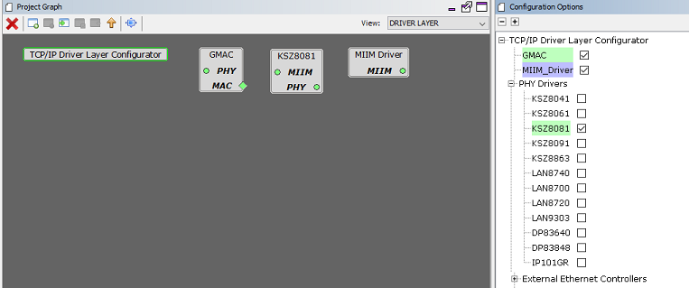
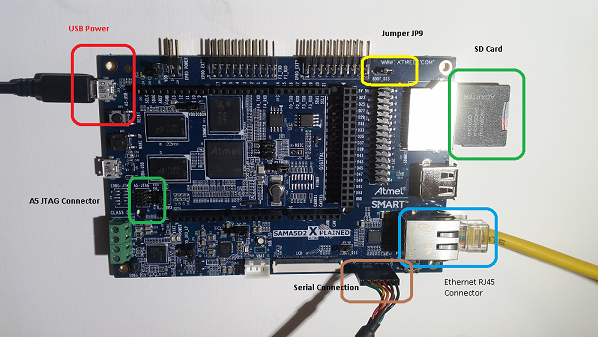
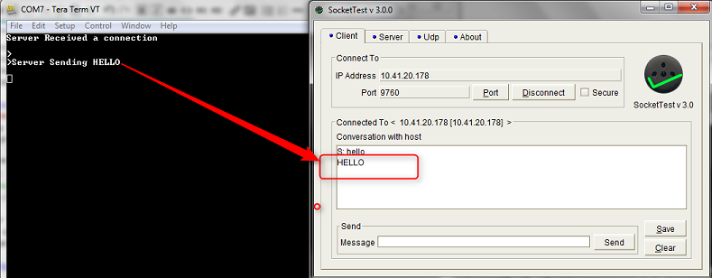

The TCP Client Server configuration demonstrates creating a network client and server that uses the MPLAB Harmony TCP API. This demonstration is a combination of the TCP/IP Client and TCP/IP Server application.
TCP/IP TCP Client Server MHC Configuration
The following Project Graph diagram shows the Harmony components included in the TCP Client demonstration application.
MHC is launched by selecting Tools > Embedded > MPLAB® Harmony 3 Configurator from the MPLAB X IDE and after successful database migration , TCP/IP demo project is ready to be configured and regenerated.

TCP/IP Root Layer Project Graph
The root layer project shows that USART1 peripheral is selected to do read and write operation for TCP/IP commands.
This is the basic configuration with SYS_CONSOLE, SYS_DEBUG and SYS_COMMAND modules. These modules are required for TCP/IP command execution.
FreeRTOS component is required for RTOS application. For bare-metal (non-RTOS) FreeRTOS component should not be selected.
NOTE - The above diagram contains FreeRTOS component and that is required for RTOS application. For bare-metal(non-RTOS) FreeRTOS component shouldn't be selected.

TCP sockets calculate the ISN using the wolfSSL crypto library.
TCP/IP Required Application
TCP/IP demo use these application module components for this demo.
Announce module to discover the Microchip devices within a local network.
DHCP Client module to discover the IPv4 address from the nearest DHCP Server.
DNS Client provides DNS resolution capabilities to the stack.
TCPIP Driver Layer
Internal ethernet driver(gmac) is enabled with the external KSZ8081 PHY driver library for SAMA5D2 demonstartion.
The MIIM Driver supports asynchronous read/write and scan operations for accessing the external PHY registers and notification when MIIM operations have completed.
TCP/IP TCP Client Server Hardware Configuration
This section describes the hardware configuration for ATSAM A5D2 Xplained Ultra Evaluation Kit and one can be used for the respective application demonstration.
- 1.
This section describes the required default hardware configuration use SAM A5D2 Xplained Ultra Evaluation Kit
SAM A5D2 Xplained Ultra Evaluation Kit
Ensure JP9 jumper is Open.
Insert the SD Card with the "harmony.bin" output of the project into the SD card slot, J19
Connect the board to a USB port on the test PC by inserting the serial cable into the serial connector, J1
For debugging insert the Atmel SAM-ICE debugger to the JTAG port, J11
Connect the micro USB cable from the computer to the USB Power connector on the SAM A5D2 Xplained Ultra Evaluation Kit to power the board, J23
Establish a connection between the router/switch with the SAM A5D2 Xplained Ultra Evaluation Kit through the RJ45 connector
TCP/IP TCP Client Server Running Application
This table lists the name and location of the IAR IDE project folder for the demonstration.
| Project Name | Target Device | Target Development Board | Description |
|---|---|---|---|
| sam_a5d2_xult.IAR | ATSAMA5D27 | SAM A5D2 Xplained Ultra + KSZ8081 PHY Daughter board | Demonstrates the TCP/IP TCP Client/Server on development board with SAMA5D2 device and an on-board KSZ8081 PHY. This is a Non-RTOS implementation |
| sam_a5d2_xult_freertos.IAR | ATSAMA5D27 | SAM A5D2 Xplained Ultra + KSZ8081 PHY Daughter board | Demonstrates the TCP/IP TCP Client/Server on development board with SAMA5D2 device and an on-board KSZ8081 PHY. This is a FreeRtos implementation |
- 1.
Build the demo by opening the project in the IAR Embedded Workbench
- 2.
Copy the project output, harmony.bin, to the SD card that is used to load the executable and run it on the SAM9X60-EK board. Note: the boot loader on the SD card, boot.bin, should be configured to load the harmony.bin image, not a uboot.bin image.
Running Demonstration Steps
- 1.
Build and download the demonstration project on the target board.
- 2.
If the board has a UART connection:
- a.
A virtual COM port will be detected on the computer, when the USB cable is connected to USB-UART connector.
- b.
Open a standard terminal application on the computer (like Hyper-terminal or Tera Term) and configure the virtual COM port.
- c.
Set the serial baud rate to 115200 baud in the terminal application.
- d.
Insert the SD Card into J19, SDMMC1, on the SAM A5D2 board and press the reset button. At this moment the board should boot up and display messages at the console.
- e.
See that the initialization prints on the serial port terminal.
- f.
When the DHCP client is enabled in the demonstration, wait for the DHCP server to assign an IP address for the development board. This will be printed on the serial port terminal.
Alternatively: Use the Announce service or ping to get the IP address of the board.
Run tcpip_discoverer.jar to discover the IPv4 and IPv6 address for the board.
- a.
- 3.
Execution :
- a.
After the successful broad bring up, the console output becomes

- b.
For TCP Client test, input the following command from the serial port: openurl < url > - The < url > argument must be a fully formed URL; for instance, http://www.microchip.com/.
For this above URL , the DNS module will make a DNS query. Then it will open a connection to the requested URL and perform a simple HTTP GET command.
The response received from the server will be printed on the terminal application through the serial port.
The expected output -

- c.
For TCP Server test, the TCP Client application is required to run on the computer (SocketTest, Packet Sender etc). In this demonstration, we use the program, SocketTest (http://sockettest.sourceforge.net/). This demonstration is tested with SocketTest v3.0.
Open the SocketTest software and set the configuration as shown in the following figure.

Press the Connect button on the SocketTest software after setting the configuration. The serial terminal indicates that the connection has been established.
Type any message in the message box of the SocketTest program, and press the Send button. The Server running on the development board will echo back the message to the SocketTest program.

- a.